The slide of the lecture is on the left, the same figure or table on the right, computed in the browser from the same data. The ▶ button moves the parameter step by step; the “Worked example” boxes redo the calculation with the numbers of the chapter.
The state space form · The Kalman filter · Smoothing, likelihood and missing data · Trend, cycle and common factors · Markov switching
The state space form
Local level and local linear trend paths
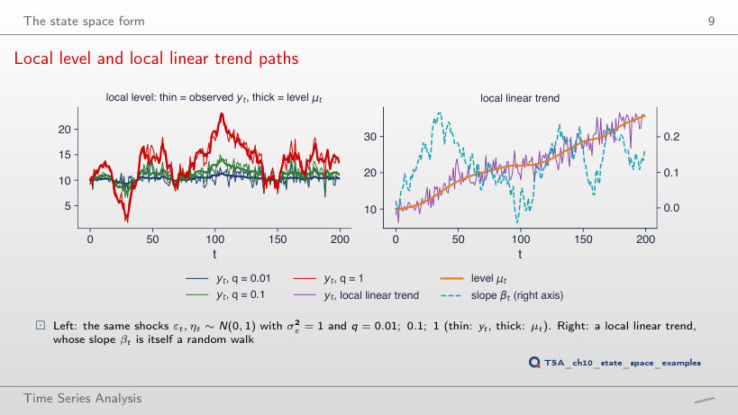
Answer
The one with q = 0.01: −0.51 (theory −1/2.01 = −0.50); for q = 1 the autocorrelation is −0.28 (theory −1/3). When the noise dominates, Δyt ≈ εt − εt−1, an MA(1) with ρ(1) = −1/2; the first difference of a random walk without noise would be uncorrelated.
Worked example: AR(2) for US GDP growth
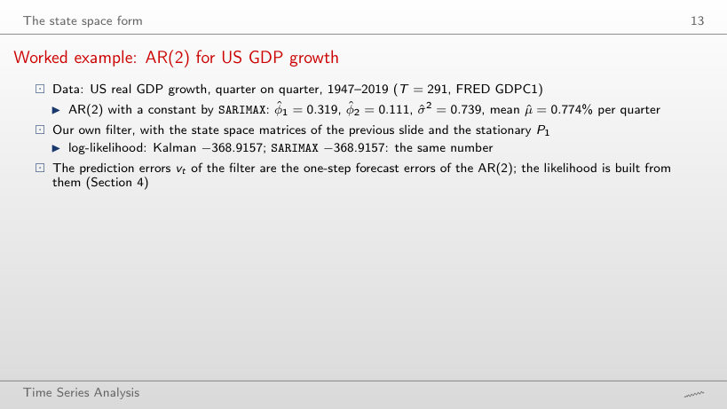
Worked example
Answer
0.858 = γ(0), the stationary variance of the AR(2), the (1,1) element of P1. F2 = 0.748, and from t = 3 on, with two lags known, Ft = σ̂² = 0.739. A stationary model needs no diffuse start.
The Kalman filter
Worked example: three periods by hand (1/2)
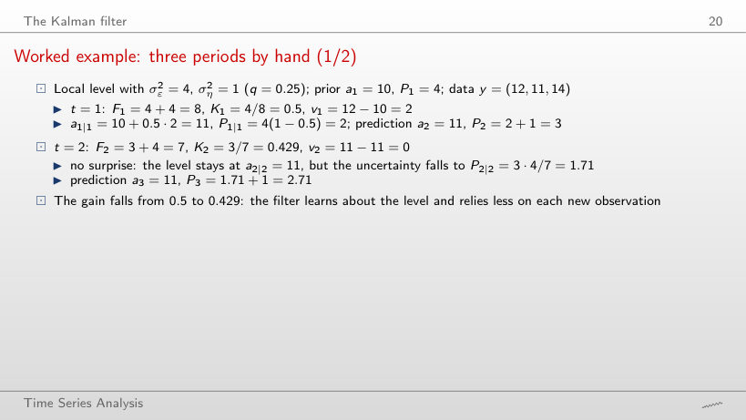
Worked example
Answer
K1 = 4/(4 + 8) = 0.333: with noisier measurements the filter relies less on the observation, and the filtered level stays closer to the prediction (a1|1 = 10.67 instead of 11).
Worked example: three periods by hand (2/2)
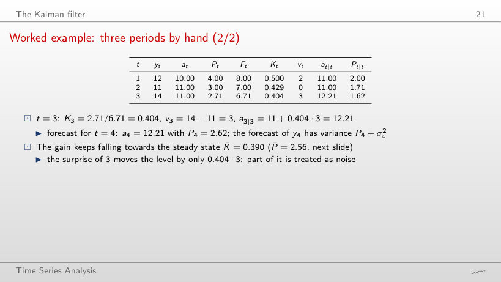
Answer
By K3v3 = 0.404·7 = 2.83, to a3|3 = 13.83. The gain K3 = 2.71/6.71 = 0.404 does not depend on the data, only on P3 and σ²ε: a larger surprise moves the level proportionally, not to the observation.
Steady state and exponential smoothing
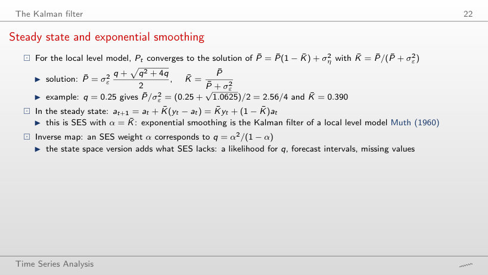
Worked example
Answer
P̄/σ²ε = (10 + √140)/2 = 10.92, so K̄ = 10.92/11.92 = 0.916. K̄ stays below 1 for every finite q; q/(q + 1) = 0.909 is not the steady state.
The Nile: the Kalman filter of the local level model
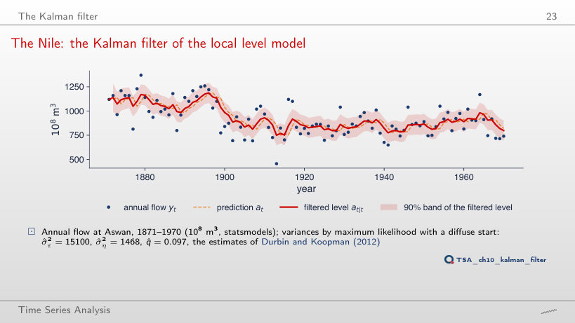
Answer
At 899, against 1037 at q̂ = 0.097: with q = 1, K̄ = 0.618, and the level takes almost two thirds of the surprise (757 in 1905). The level adapts to the dam faster, but it also follows isolated years.
Interpreting the Nile filter
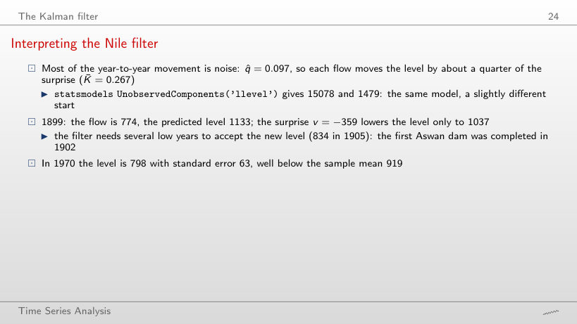
Answer
It rises, to 0.163 (0.097 on 1871–1970), with σ̂²ε = 19103. Over 50 years the 1899 break weighs more, and the likelihood attributes it to movement of the level.
Convergence of the Kalman gain and equivalence with SES
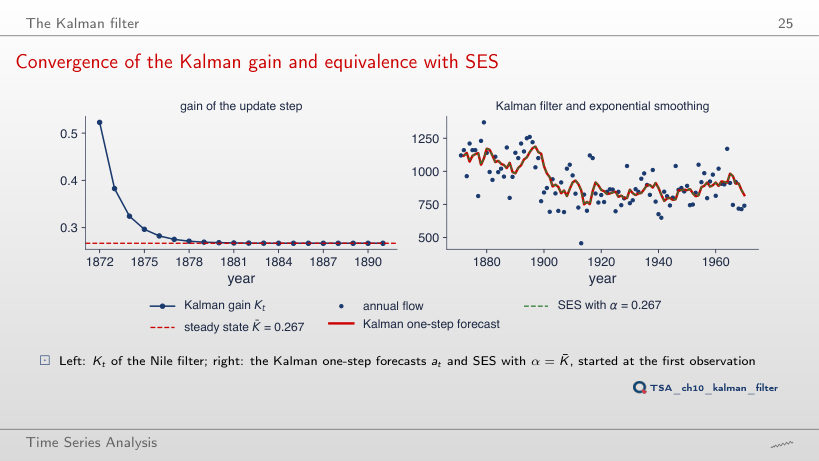
Answer
From year 5 (from year 11 at q̂ = 0.097 and from year 17 at q = 0.03). With a large q, Pt settles quickly: every new observation dominates the uncertainty left by the diffuse start.
Smoothing, likelihood and missing data
Smoothing: using the whole sample
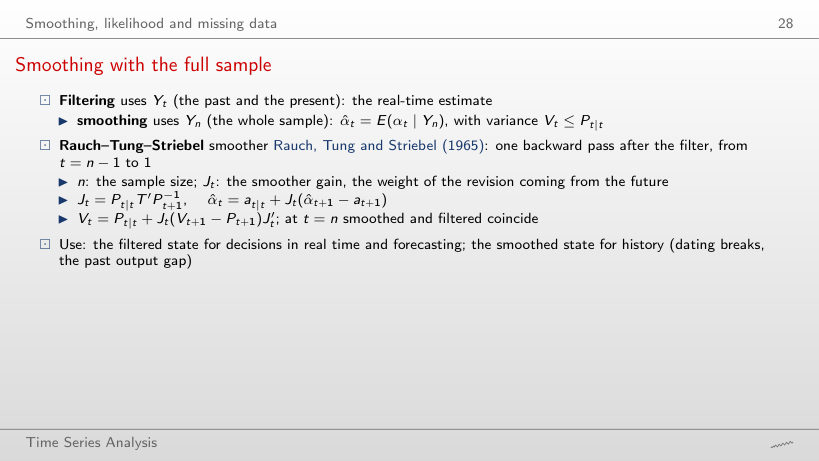
Worked example
Answer
Filtered 1133, smoothed 1000: a difference of 134, larger than in 1897 (1145 against 1038, i.e. 107). The smoother uses the low years after 1899, so it lowers the level before the drop appears in the data.
The Nile: filtered against smoothed level
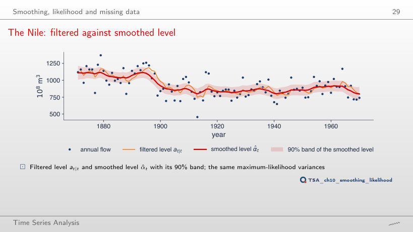
Answer
Almost a straight line, falling slowly from 956 in 1897 to 881 in 1950: the step disappears. With a small q the model attributes the drop to noise, and the smoother cannot show a break that the model rules out.
The likelihood: prediction-error decomposition
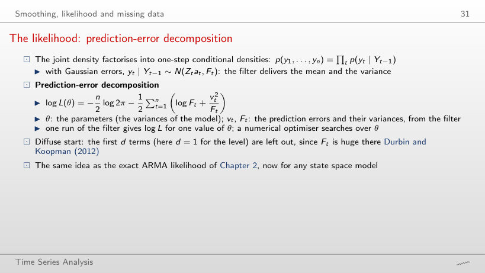
Worked example
Answer
1913 (ℓt = −9.78), a single very dry year; then 1916 (−9.18) and 1899 (−9.02). The year 1871 is not in the sum: the diffuse start gives it a huge Ft.
Profile likelihood and the choice of q
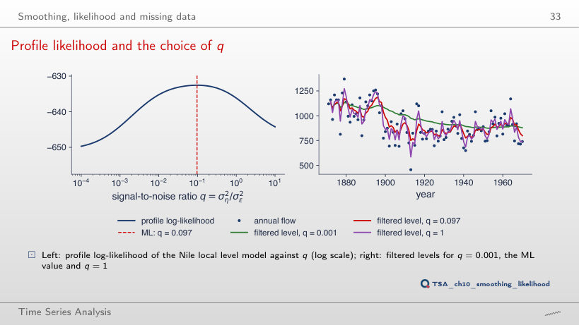
Answer
23.3, as far from the data as q = 0.001 (23.1); q = 1 gives 7.2. A level that chases every flood predicts one step ahead as badly as an almost constant level.
Diagnostics of the Nile model
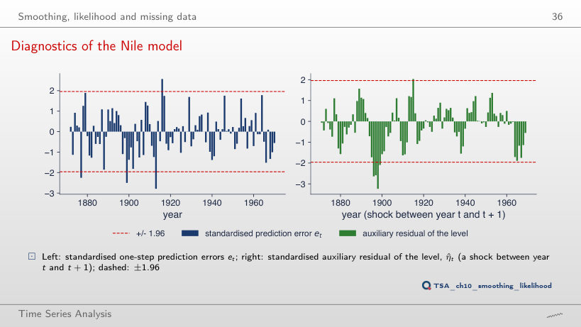
Answer
No: Q(10) = 20.9, p = 0.022. An almost constant level leaves the drop after 1899 in the prediction errors, which become autocorrelated; at q̂ = 0.097, p = 0.21.
Missing years and forecasts of the Nile
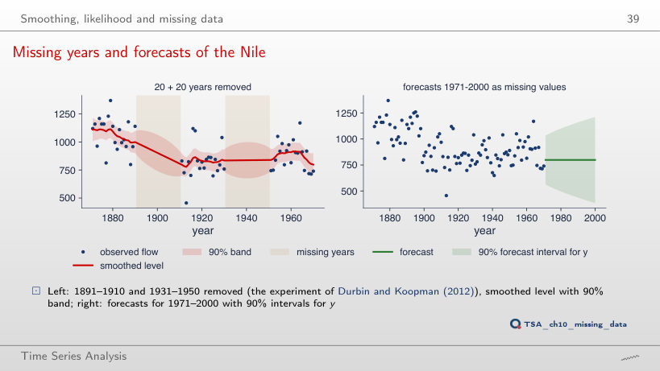
Answer
78, against 99 in 1900 with 20-year gaps and 48 with all data. The band grows with the distance to the nearest observed year.
Trend, cycle and common factors
The HP filter is a state space smoother
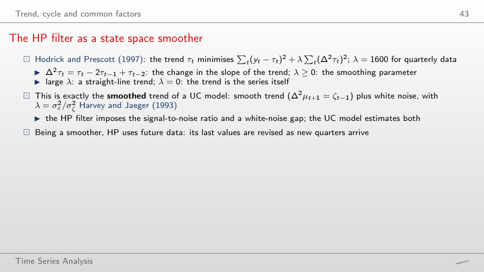
Worked example
Answer
5.5, against 2.9 at λ = 1600 and 1.3 at λ = 1: a stiffer trend leaves more of the movement of GDP in the gap.
Romanian GDP: trend
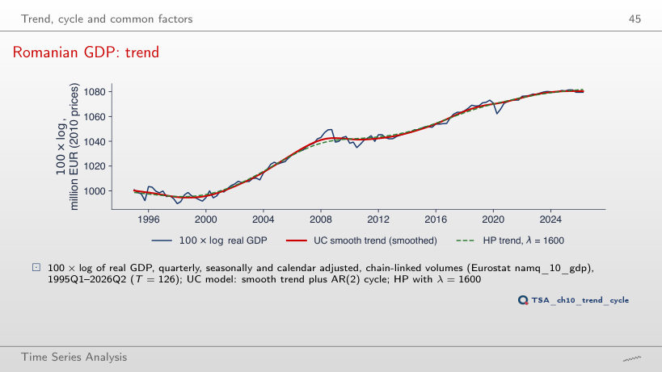
Answer
λ = 400: the largest distance is 0.63 points (1.01 at λ = 100 and 2.65 at λ = 1600). The UC trend is more flexible than the trend imposed by λ = 1600, so a smaller λ approximates it better.
The Romanian output gap: three methods
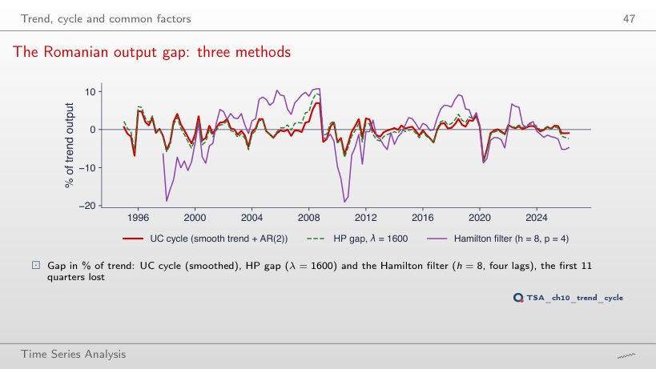
Answer
It falls to 4.6 (6.5 at h = 8 and 7.7 at h = 12): the residual of the regression contains the surprises of a shorter horizon.
The output gap in real time and with the full sample
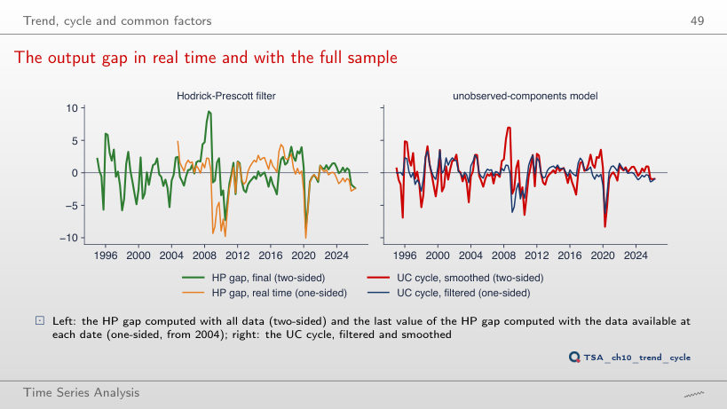
Answer
2.2%, exactly the real-time value: at the end of the sample the two-sided filter becomes one-sided. With the data up to 2026Q2, the gap of 2008Q3 is 9.5%.
A time-varying beta: the BET and the euro area
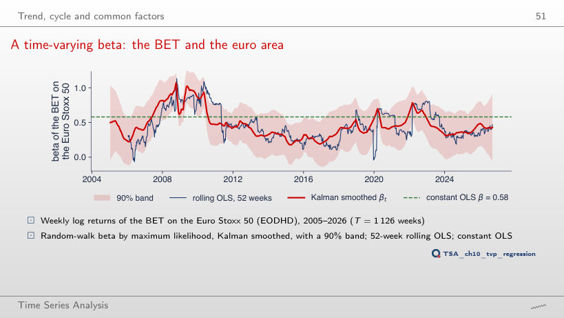
Answer
A flat line at 0.58, the OLS beta: with σ²β = 0 the Kalman filter computes the OLS estimate recursively, and the smoother gives every week the full-sample estimate.
A common factor of US activity
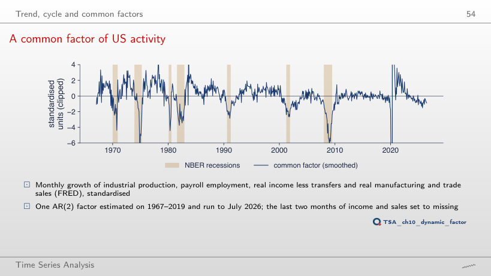
Answer
−0.78 with today’s FRED data, against −0.87 with two missing months (the slide, with the data of that time: −0.9). The factor uses whatever has arrived: missing income and sales move the latest value, they do not make it impossible to compute.
Markov switching
Transition matrix, durations and ergodic probabilities
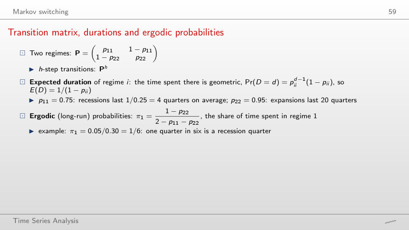
Worked example
Answer
1/(1 − 0.5) = 2 periods. p11/(1 − p11) = 1 counts only the periods after the first, and 1/p11 is not a duration.
The Hamilton filter
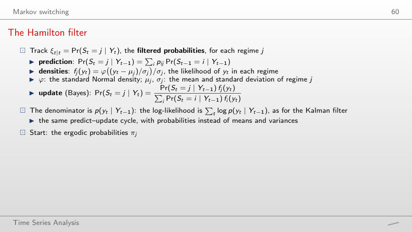
Worked example
Answer
0.993: the prediction was 0.349, but f1(−2.21) is much larger than f2(−2.21), and Bayes’ rule takes the probability close to 1.
Hamilton's specification on today's data
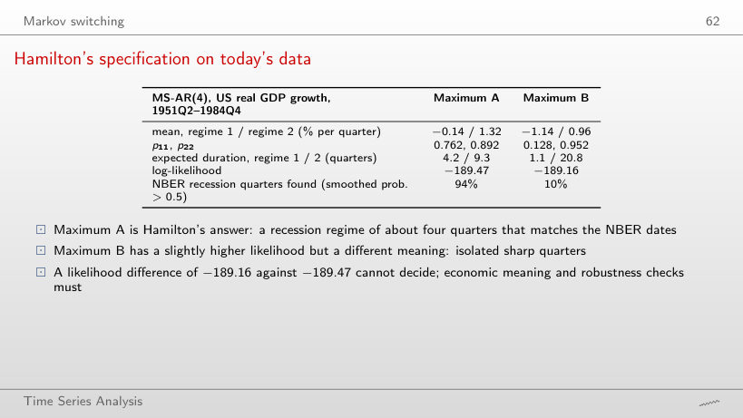
Answer
90% (94% at the threshold 0.5); maximum B stays at 10%. The smoothed probabilities of maximum A are close to 0 or 1, so the threshold changes little.
US recessions from GDP growth
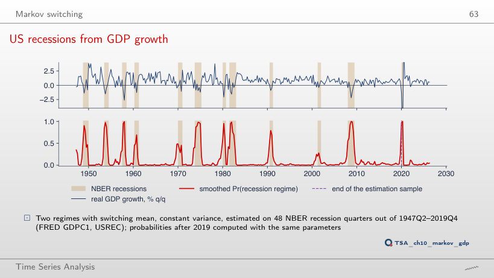
Answer
1.4 quarters and 39.6% (3.2 quarters and 62.5% at p̂11 = 0.685). A less persistent regime needs weaker data for every recession quarter, so short and mild recessions are no longer found; 2020Q2 keeps the probability 1.00.
Filtered against smoothed probabilities: 2008
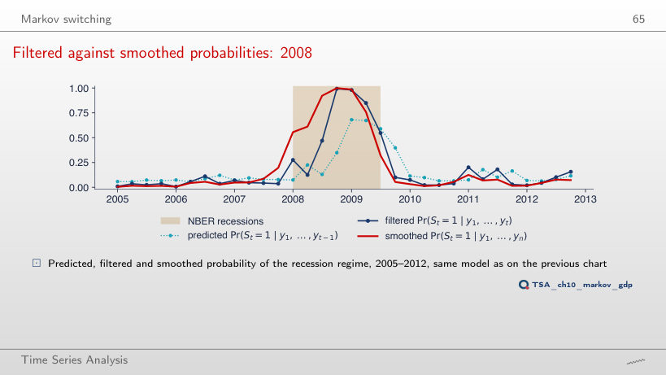
Answer
No: its maximum is 0.38, and the smoothed one does not cross 0.5 either. The 2001 recession was too mild for the mean of −0.42% per quarter of the recession regime.
Checks: which regimes did the model find?
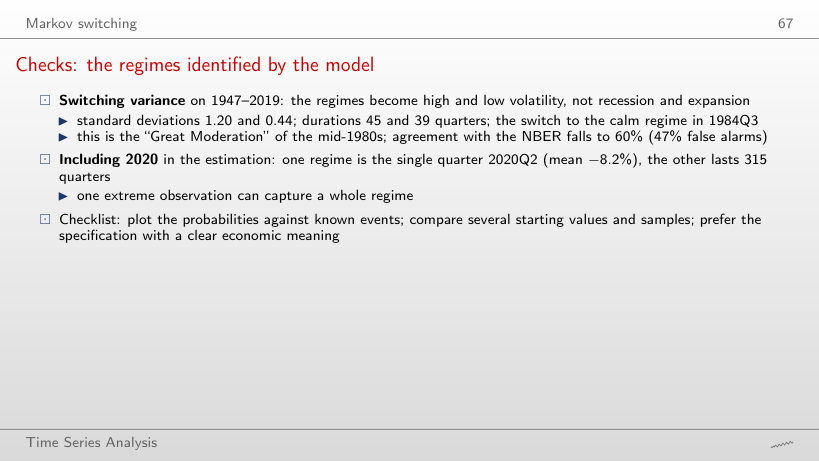
Answer
One, 2020Q2 (mean −8.2%); on 1947–2019 the regime holds 30 quarters. A single extreme observation forms a regime on its own.
Romanian GDP growth regimes
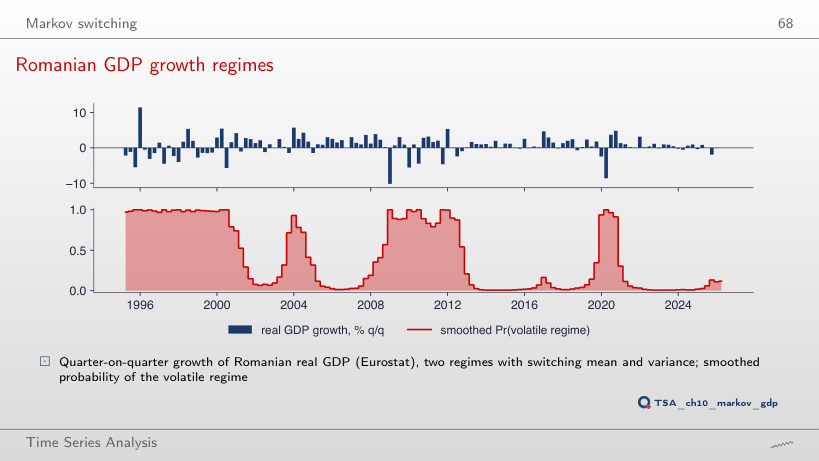
Answer
29% (40% at p̂11 = 0.911): a less persistent volatile regime keeps only the quarters with large rises or falls.
Calm and turbulent stock markets
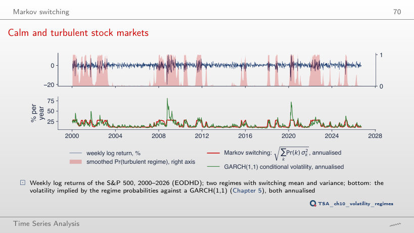
Answer
12% (26% at p̂11 = 0.930). p11 = 0.5 does not mean a random classification: a turbulent regime that lasts two weeks on average remains only for the extreme weeks.
Regime switching and spurious long memory
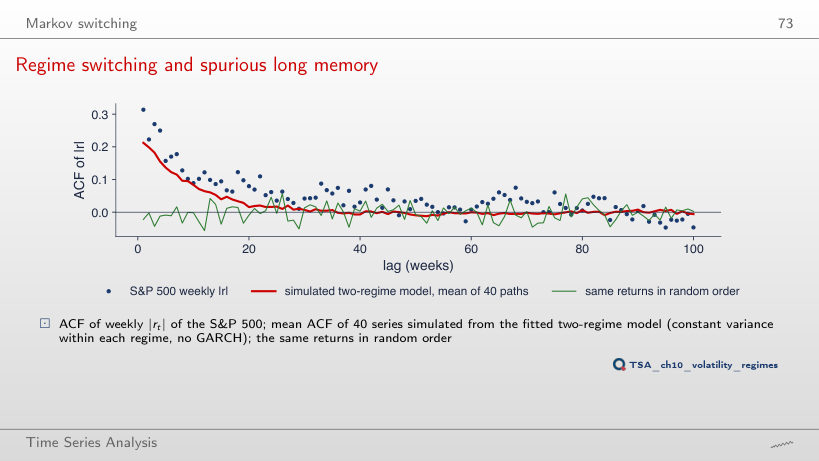
Answer
Around 0.21, below the 0.31 of the data: the regimes explain much of the short-run clustering, not all of it. The first path gives 0.26, the second 0.19: the mean over 40 paths removes the sampling variation.
Recap: Markov switching
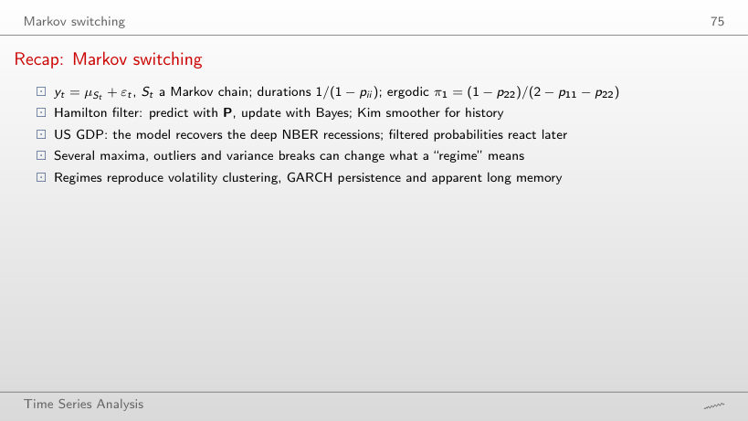
Answer
The US expansion: 19.7 quarters = 4.9 years, against 36.8 weeks = 0.7 years. The duration 1/(1 − pii) is in the time unit of the data.
Annual flow of the Nile at Aswan, 1871–1970 (the statsmodels data set). Weekly S&P 500, BET and Euro Stoxx 50 prices (data/market, up to 18 September 2026). US real GDP growth and the NBER dates (FRED GDPC1, USREC), read with the chapter’s loader on 4 November 2026 and cut at 2026Q2, the last quarter of the slides; they reproduce the numbers of the lecture exactly. The four coincident indicators (FRED INDPRO, PAYEMS, W875RX1, CMRMTSPL), also read on 4 November 2026 and cut at July 2026: they have been revised since the slides were made; the parameters of the factor model (estimated on 1967–2019) are those of the lecture, but the latest months of the factor differ slightly (the July 2026 value: −0.87 with today’s data, −0.9 on the slide). Romanian real GDP (Eurostat namq_10_gdp) has been revised since the slides were made; the page uses the series of the slides, read from the vector line of the lecture chart (charts/tsa_ch10_ro_trend.pdf, all 126 quarters), which reproduces the numbers of the lecture to the sixth significant digit. The components of the UC model, the common factor, the probabilities of the two maxima of the MS-AR(4), the GARCH(1,1) volatility and the simulated regime paths come from the chapter’s code, with the same seed; the browser recomputes the Kalman filter and smoother, the likelihood, the diagnostics, the HP filter, the Hamilton (2018) filter, the real-time gaps, the time-varying beta, the Hamilton (1989) filter and the Kim smoother. Variants that do not appear in the lecture (another q, λ, h, sample end, p₁₁ or number of missing months) are extra runs of the chapter’s code with the same data; the chart “Checks: which regimes did the model find?” is an extra run for a slide that gives only numbers.